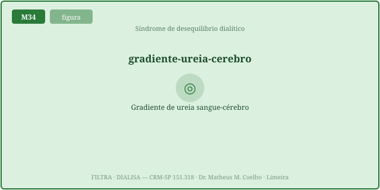
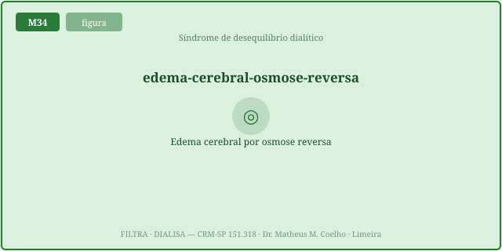
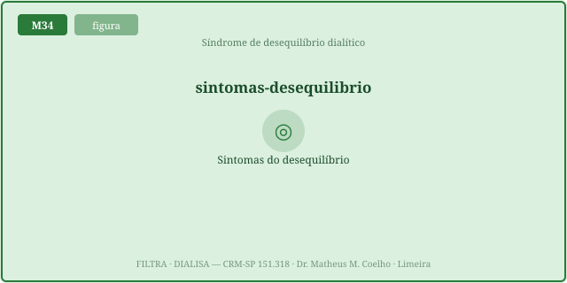
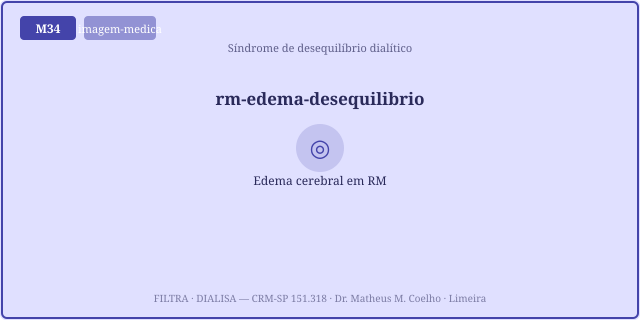
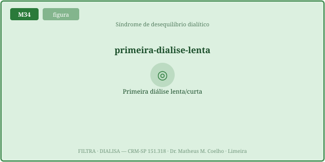
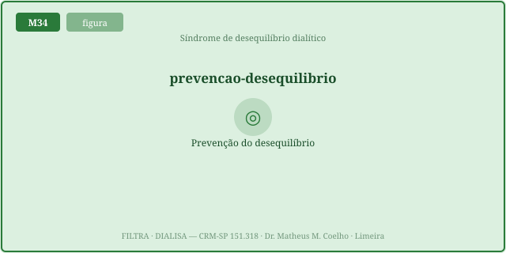

A diálise não substitui o rim — substitui parcialmente uma função
por física. Aqui, a física se volta contra o cérebro. As Fig. 1–8 voltam no Caso, na Trilha e na
Avaliação (algumas reaparecem nos exercícios). Atribuição em CREDITS.md (em curadoria).
Tudo ancorado na homeostasia: o corpo defende a tonicidade célula a célula; a diálise rápida
rompe esse equilíbrio no compartimento cerebral.
No dialisador, a ureia do sangue despenca em exponencial. No cérebro, a ureia só sai através da BHE, devagar — e o tecido ainda gera osmoles idiogênicos que o seguram. Em pouco tempo a ureia cerebral > sanguínea: nasce o gradiente. O motor calcula as duas curvas: o sangue C(t)=BUN₀·exp(−k·t) e o cérebro com atraso de constante τ (τ↑ com a integridade da BHE).

Normalmente a osmolalidade plasmática protege a célula. Aqui o sinal se inverte: o cérebro hiperosmolar puxa água do sangue para dentro de si. Gradiente = (ureia_cérebro − ureia_sangue)·fator; a água segue o gradiente → edema cerebral. O edema estimado é proporcional ao pico do gradiente durante a sessão.

O edema sobe a pressão intracraniana num crânio que não cede. A clínica é uma escada de gravidade: cefaleia → náusea/vômito → confusão → convulsão → coma. Surge durante ou logo após a sessão, tipicamente a primeira, no paciente muito urêmico.


Risco máximo: 1ª diálise (sem adaptação prévia), BUN muito alto, remoção agressiva (alta eficiência/tempo curto) e idade extrema. A prevenção é a mesma física ao contrário: a 1ª sessão gentil — baixo fluxo, curta, com queda da ureia limitada (<~30–40%) — mantém o gradiente pequeno. O motor mostra: baixar k achata a curva do edema.


Homem de 58 anos, ~70 kg, DRC recém-descoberta, BUN 180 mg/dL, urêmico, nunca dialisou. O plantonista prescreve uma HD "completa" de 4 h em alta eficiência. Vamos ver o que a física faz com o cérebro dele — e como evitá-la.
O dialisador limpa o sangue por difusão direta; a ureia do cérebro só sai através da BHE, devagar, e o tecido gera osmoles idiogênicos que a retêm (Fig. 1–2).
A diferença de osmolalidade entre os dois compartimentos: (ureia_cérebro − ureia_sangue)·fator. Quando o cérebro fica mais concentrado, o gradiente puxa água para dentro dele.
Porque o gradiente osmótico, que normalmente protege a célula, aqui se inverte e machuca: a água migra DO sangue PARA o cérebro, causando edema (Fig. 3).
Um BUN inicial muito alto (mais ureia para cair) e uma remoção mais rápida (k alto / tempo curto): o sangue despenca e o cérebro não acompanha.
A BHE atrasa o efluxo da ureia cerebral. Quanto mais íntegra (τ maior), mais o cérebro fica para trás → maior o gradiente. É a defesa homeostática virando armadilha.
Sem adaptação prévia, o cérebro está cheio de osmoles e a queda da ureia é a maior de todas. As sessões crônicas seguintes partem de um BUN menor → gradientes menores (Fig. 7).
Cefaleia → náusea/vômito → confusão → convulsão → coma. Cada degrau é mais edema e mais PIC. Reconhecer a cefaleia evita o próximo degrau (Fig. 5).
Durante ou logo após a sessão — justamente quando o gradiente atinge o pico. Por isso o motor rastreia o pico do gradiente, não só o valor final.
1ª sessão gentil: baixo fluxo, curta, com queda da ureia limitada (<~30–40%). Menos queda → gradiente pequeno → o cérebro acompanha. Gentil é seguro (Fig. 8).
Menos munição: a queda absoluta de ureia é pequena, o gradiente nasce pequeno e o risco cai muito — mesmo numa sessão rápida. O BUN muito alto é o principal fator.
O corpo defende a tonicidade célula a célula. A diálise rápida quebra esse equilíbrio entre sangue e cérebro. A prevenção devolve o tempo de que a homeostasia precisa para acompanhar.
Os controles do Lab alimentam esta curva: o edema cerebral estimado (%) em função da taxa de remoção k (h⁻¹). Veja o pico na remoção agressiva (k alto) e a curva plana na gentil (k baixo) — a tese de prevenção. O marcador laranja é o k atual.
| Variável | Atual | Comentário |
|---|---|---|
| Queda da ureia sanguínea (%) | — | alvo gentil <~30–40% |
| BUN sangue no fim (mg/dL) | — | cai rápido |
| Ureia cerebral no fim (mg/dL) | — | atrasa |
| Gradiente cérebro−sangue de PICO (mOsm) | — | o que machuca |
| τ do efluxo cerebral (h) | — | ↑ com BHE / 1ª diálise |
| Edema cerebral estimado (%) | — | ∝ gradiente de pico |
| Risco de desequilíbrio | — | baixo · moderado · alto |